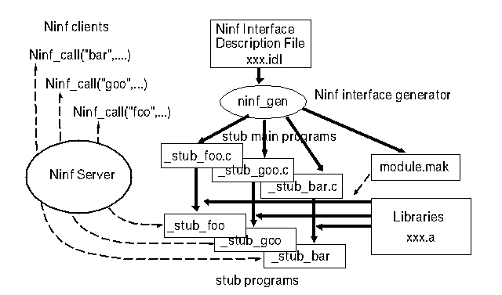

<!DOCTYPE HTML PUBLIC "-//W3O//DTD W3 HTML 2.0//EN">
<!Converted with LaTeX2HTML 95.1 (Fri Jan 20 1995) by Nikos Drakos (nikos@cbl.leeds.ac.uk), CBLU, University of Leeds >
<!Actually with its Japanized version JLaTeX2HTML 95 (Wed Mar 1 1995) by Masahiro Kitagawa (kitagawa@ee.es.osaka-u.ac.jp), Osaka University >
<HEAD>
<TITLE> IDL $B%U%!%$%k$NLr3d(B $B$H(B IDL$B$N@_7WJ}?K(B</TITLE>
</HEAD>
<BODY>
<meta name="description" value=" IDL $B%U%!%$%k$NLr3d(B $B$H(B IDL$B$N@_7WJ}?K(B">
<meta name="keywords" value="main">
<meta name="resource-type" value="document">
<meta name="distribution" value="global">
<P>
 <BR> <HR><A NAME=tex2html164 HREF="node14.html"></A>   <A NAME=tex2html162 HREF="node12.html"></A>   <A NAME=tex2html156 HREF="node12.html"></A>         <BR>
<B> Next:</B> <A NAME=tex2html165 HREF="node14.html"> IDL $B$K$h$k5-=R$NFbMF(B</A>
<B>Up:</B> <A NAME=tex2html163 HREF="node12.html"> Ninf Interface Definition </A>
<B> Previous:</B> <A NAME=tex2html157 HREF="node12.html"> Ninf Interface Definition </A>
<BR> <HR> <P>
<H2><A NAME=SECTION00061000000000000000> IDL $B%U%!%$%k$NLr3d(B $B$H(B IDL$B$N@_7WJ}?K(B</A></H2>
<P>
Ninf $B$G$O!"?tCM1i;;%i%$%V%i%j$r3+H/<T$N<B9T4D6-$G$=$N$^$^(B
$BDs6!$7$F$b$i$&$3$H$rL\I8$H$7$F$$$k!#(B
$B$3$N$?$a$K$O!"%i%$%V%i%jDs6!<T$K$H$C$F!"(B
$B%i%$%V%i%j$r(BNinf$B2=$9$k$3$H$,==J,$KMF0W$G$J$1$l$P$J$i$J$$!#(B
IDL $B%U%!%$%k$H(Bstub generator $B$O$3$N2aDx$r;Y1g$9$k$b$N$G$"$k!#(B
$B?tCM1i;;%i%$%V%i%j:n@.<T$K%i%$%V%i%j$N%$%s%?!<%U%'%$%9$d!"(B
$BI,MW$J%*%V%8%'%/%H%U%!%$%k!"%i%$%V%i%j$r5-=R$7$F$b$i$$!"$=$l$+$i(B
Ninf$B2=$7$?%i%$%V%i%j$r9=C[$9$k$N$KI,MW$J(B $B%9%?%V(B  $B$H$=$l$r(B
$B%3%s%Q%$%k$9$k$N$KI,MW$J(B $B%a%$%/%U%!%$%k$r@8@.$9$k!#(B
$B?^(B<A HREF="node13.html#ninf_stub_gen">5</A>$B$K(BNinf stub generator $B$NF0:n$N35MW$r<($9!#(B
<P>
<P><A NAME=201>&#160;</A><A NAME=ninf_stub_gen>&#160;</A>
<BR><STRONG>$B?^(B 5:</STRONG> NINF stub generator $B$NF0:n(B<BR>
<P>
<P>
IDL $B$O!"?tCM1i;;%i%$%V%i%j@_7W<T$K5-=R$7$F$b$i$&4X78>e$J$k$Y$/(B
$BB?$/$N%W%m%0%i%^$K?F$7$_$d$9$$9=J8$r:NMQ$9$kI,MW$,$"$k!#(B
$B$=$3$G(B Ninf IDL $B$O(B ANSI C $B$r4pK\$K$7$?%$%s%?!<%U%'%$%95-=R$r(B
$B:NMQ$7$?!#(B
<P>
<BR> <HR>
<P><ADDRESS>
<I>Hidemoto Nakada <BR>
Wed Dec 20 05:42:46 JST 1995</I>
</ADDRESS>
</BODY>
